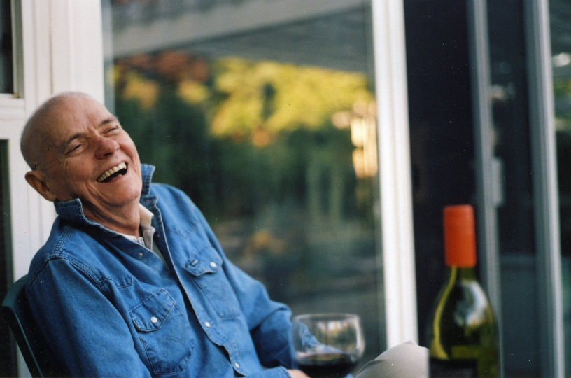

Harmonic Space 2020: James Tenney
Friday, October 16 | 18:30
Music by James Tenney
Saturday, October 17 | 20:00
Music by John Cage, Guillaume de Machaut, Philippe de Vitry, Marc Sabat, Wolfgang von Schweinitz, James Tenney, and Charles Ives
Monday, October 19 | 20:00
Music by James Tenney, Fredrik Rasten, Marc Sabat, and Catherine Lamb
Wednesday, October 21 | 20:00
Music by Thomas Nicholson, Chiyoko Szlavnics, and James Tenney
Friday, October 23 | 20:00
Music by Wolfgang von Schweinitz with a pre-concert lecture-demonstration
Saturday, October 24 | 20:00
Music by M.O. Abbott, Catherine Lamb, Marc Sabat, and James Tenney

James Tenney
James Tenney (1934–2006) was born in Silver City, New Mexico, and grew up in Arizona and Colorado, where he received his early training as a pianist and composer. He attended the University of Denver, the Juilliard School of Music, Bennington College (Bachelor’s degree 1958), and the University of Illinois (Master’s degree 1961). His teachers and mentors have included Eduard Steuermann, Chou Wen-Chung, Lionel Nowak, Carl Ruggles, Lejaren Hiller, Kenneth Gaburo, Edgard Varèse, Harry Partch, and John Cage.
A performer as well as a composer and theorist, Tenney was co-founder and conductor of the Tone Roads Chamber Ensemble in New York City (1963–70). He was a pioneer in the field of electronic and computer music, working with Max Mathews and others at the Bell Telephone Laboratories in the early 1960s to develop programs for computer sound-generation and composition. He has written works for a variety of media, both instrumental and electronic, many of them using alternative tuning systems.
Tenney is the author of several articles on musical acoustics, computer music, and musical form and perception, as well as two books: META + HODOS: A Phenomenology of 20th-Century Musical Materials and an Approach to the Study of Form (1961; Frog Peak, 1988) and A History of ‘Consonance’ and ‘Dissonance’ (Excelsior, 1988). He has received grants and awards from the National Science Foundation, the National Endowment for the Arts, the Ontario Arts Council, the Canada Council, the American Academy and Institute of Arts and Letters, the Fromm Foundation, the Deutscher Akademischer Austauschdienst, and the Jean A. Chalmers Foundation.
Tenney returned to the California Institute of the Arts in the fall of 2000 to take the Roy E. Disney Family Chair in Musical Composition, having taught there at its beginnings in the early 1970s. He has also been on the faculties of at the Polytechnic Institute of Brooklyn, the University of California at Santa Cruz and at York University in Toronto where he was named Distinguished Research Professor in 1994.
James Tenney’s music is published by Sonic Art Editions (Baltimore) and the Canadian Music Centre, and is also distributed by Frog Peak (Lebanon, New Hampshire). Recordings are available from Artifact, col legno, CRI, Hat[now]ART, Koch International, Mode, Musicworks, Nexus, oodiscs, SYR, Toshiba EMI, and New World, among others.